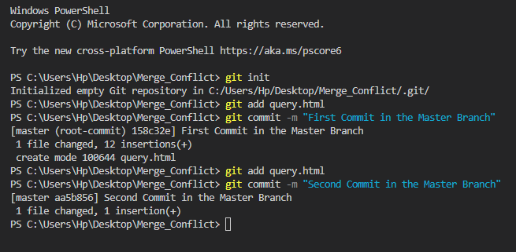
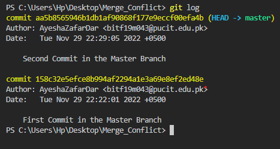
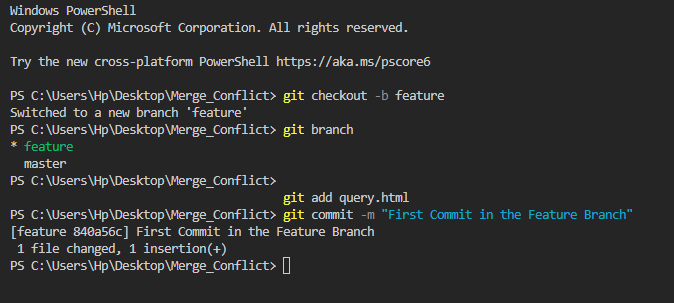
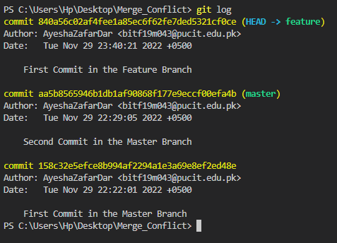
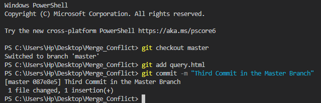
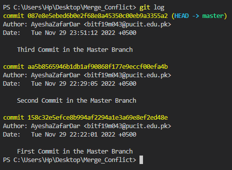
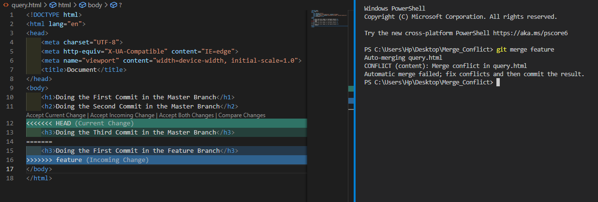
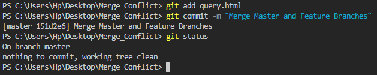

• After creating a new, empty git repository and adding some content to the query.html file, I made two commits to the master branch.
git init: Creates a brand-new repository in the Git version control system. This is the primary command to master if you intend to use revision control with your project.
git add [filename]:Moves changes from the working directory to the staging area. This gives you the opportunity to prepare a snapshot before committing it to the official history.
git commit -m [message]:Takes the staged snapshot and commits it to the project history with a message. Combined with git add, this defines the basic workflow for all Git users.
git log: This command is used to check the commit history.
• Using the git checkout -b feature command, I've established a new Branch called feature.
• Since there are now two distinct branches, Master and Feature, I decided to make a few edits to the query.html file in the feature branch.
git checkout -b [branchName]: Create the new branch on your local machine and switch in this branch.
git branch: This command lists all the branches available in the repository.
git log: This command is used to check the commit history.
• Once again, using the command "git checkout master," I have returned to the master branch and made some edits to the query.html file.
git checkout [branchName]: This command is used to switch from one branch to another.
git log: This command is used to check the commit history.
• And now, with the help of the git merge feature command, I'd want to combine my two branches, master and feature.
git merge [branchname]: This command merges the specified branch’s history into the current branch.
• Since just one line of the query.html file was modified between the master and feature branches highlighted in the above snapshot, a merge conflict has arisen as a result of this difference in content. In order to fix this, I've decided to go ahead and commit to the change that was made in the feature branch.
• A snapshot of the master and feature branches being merged after a conflict was resolved is shown below.
git status: This command lists all the files that have to be committed.
